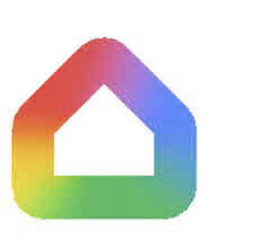

Trade Mark Journal No.2025/043 24 October 2025
UK00004277175 13 October 2025 (9,38,42)

International priority date claimed: 6 October 2025
(United States of America)
(99430053)
- Class 9
- Downloadable and recorded software used for the control of voice controlled information and communication devices; downloadable and recorded software for providing a personal voice-enabled digital assistant, including by means of artificial intelligence (AI); downloadable and recorded chatbot software for simulating conversations, analyzing images, sound and video, summarizing text, creating content, brainstorming, trip planning, and answering queries; downloadable and recorded software using artificial intelligence (AI) for the production of speech, text, images, video, and sound; downloadable and recorded software for voice and image recognition, accessing and searching online databases and websites, and a user's mobile phone, computer, tablet, or other electronic communication device for documents, files, and other stored information on command, including by means of artificial intelligence (AI); downloadable and recorded software for adding and accessing calendar appointments, alarms, timers, reminders, and making restaurant, travel, and hotel reservations, including by means of artificial intelligence (AI); downloadable and recorded software for controlling home automation devices and systems, namely, lighting, appliances, cameras, thermostats, air quality monitors and sensors, locks, doorbells, heating and air conditioning units, alarms and other safety equipment, home monitoring equipment, televisions, monitors, displays, gaming systems, other media playing devices such as DVD players and other streaming content devices, including by means of artificial intelligence (AI); downloadable and recorded software for streaming, playing, and generating audio, video, and multimedia content, including by means of artificial intelligence (AI); computer hardware for streaming, playing, and generating audio, video, and multimedia content, and for controlling home automation goods and systems as well as televisions, monitors, gaming systems, and digital media streaming devices; audio speakers; electronic devices embedded with computer software that allows the sharing and transmission of data and information between devices for the purposes of facilitating environmental monitoring, control, and automation, including by means of artificial intelligence (AI); digital thermostats; wireless, digital, motion activated, and video cameras; electronic monitors and sensors for monitoring water, humidity levels, heat, temperature, air quality, light, movement, motion, sound, and the presence of people, animals and objects; electronic doorbells; intercoms; smoke alarms, carbon monoxide alarms, fire alarms; access control and alarm monitoring systems; security alarm hubs; sound alarms; alarm sensors; security alarm controllers; stand alone information device, namely, voice and manual controlled audio speakers, tablets, and computer devices with personal digital assistant capabilities for streaming, playing, and generating audio, video, and multimedia content, for controlling televisions, monitors, gaming systems, and digital media streaming devices, accessing and searching online databases, websites, mobile phones, computers, tablets, smart phones, handheld computers, portable computers for documents, files, and other stored information on command, and adding and accessing calendar appointments, alarms, timers, reminders, making restaurant, travel, and hotel reservations, and making professional services appointments, including by means of artificial intelligence (AI); Software; Artificial intelligence (AI) software; computer hardware; home automation systems; speakers; cameras.
- Class 38
- Telecommunication services, namely, transmission of emails, text messages, phone calls, voice, data, graphics, images, audio and video clips by means of telecommunications networks, wireless communication networks, and the Internet.
- Class 42
- Software as a service (SaaS); providing online non-downloadable software; providing online non-downloadable artificial intelligence (AI) software; artificial intelligence as a service (AIAAS) services featuring software using artificial intelligence (AI); providing online non-downloadable software used for the control of voice controlled information and communication devices; providing online non-downloadable software for providing a personal voice-enabled digital assistant, including by means of artificial intelligence (AI); providing online non-downloadable chatbot software for simulating conversations, analyzing images, sound and video, summarizing text, creating content, brainstorming, trip planning, and answering queries; providing online non-downloadable software using artificial intelligence (AI) for the production of speech, text, images, video, and sound; providing online non-downloadable software for voice and image recognition, accessing and searching online databases and websites, and a user's mobile phone, computer, tablet, or other electronic communication device for documents, files, and other stored information on command, including by means of artificial intelligence (AI); providing online non-downloadable software for adding and accessing calendar appointments, alarms, timers, reminders, and making restaurant, travel, and hotel reservations, including by means of artificial intelligence (AI); providing online non-downloadable software for controlling home automation devices and systems, namely, lighting, appliances, cameras, thermostats, air quality monitors and sensors, locks, doorbells, heating and air conditioning units, alarms and other safety equipment, home monitoring equipment, televisions, monitors, displays, gaming systems, other media playing devices such as DVD players and other streaming content devices, including by means of artificial intelligence (AI); providing online non-downloadable software for streaming, playing, and generating audio, video, and multimedia content, including by means of artificial intelligence (AI).
Google LLC
Representative: Fieldfisher LLP